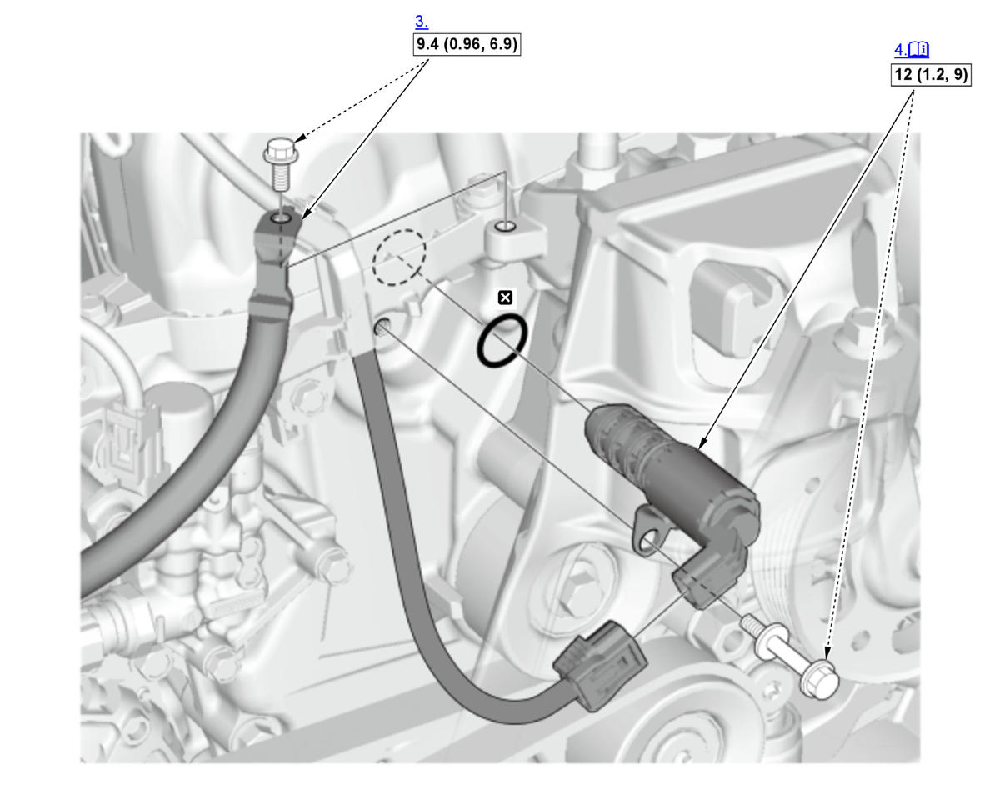

Intake Side (VTC Oil Control Solenoid Valve A)
NOTE:
Numbered call-outs in figure pertain to list numbers in following procedure.
Fig 1: Intake Side (VTC Oil Control Solenoid Valve A) Components With Torque Specifications (K20C1 - 2017-21)

Courtesy of HONDA, U.S.A., INC. |
Detailed information, notes and precautions |
 |
Torque: N.m (kgf.m, lbf.ft) |
 |
Replace |
- Engine Cover - Remove
- Expansion Tank - Move
- Ground Cable Terminal - Disconnect
- VTC Oil Control Solenoid Valve A - Remove
Note for installation
- Coat the O-ring with clean engine oil.
- Clean and dry the mating surface of the solenoid valve.
- All Removed Parts - Install
1. Install the parts in the reverse order of removal.